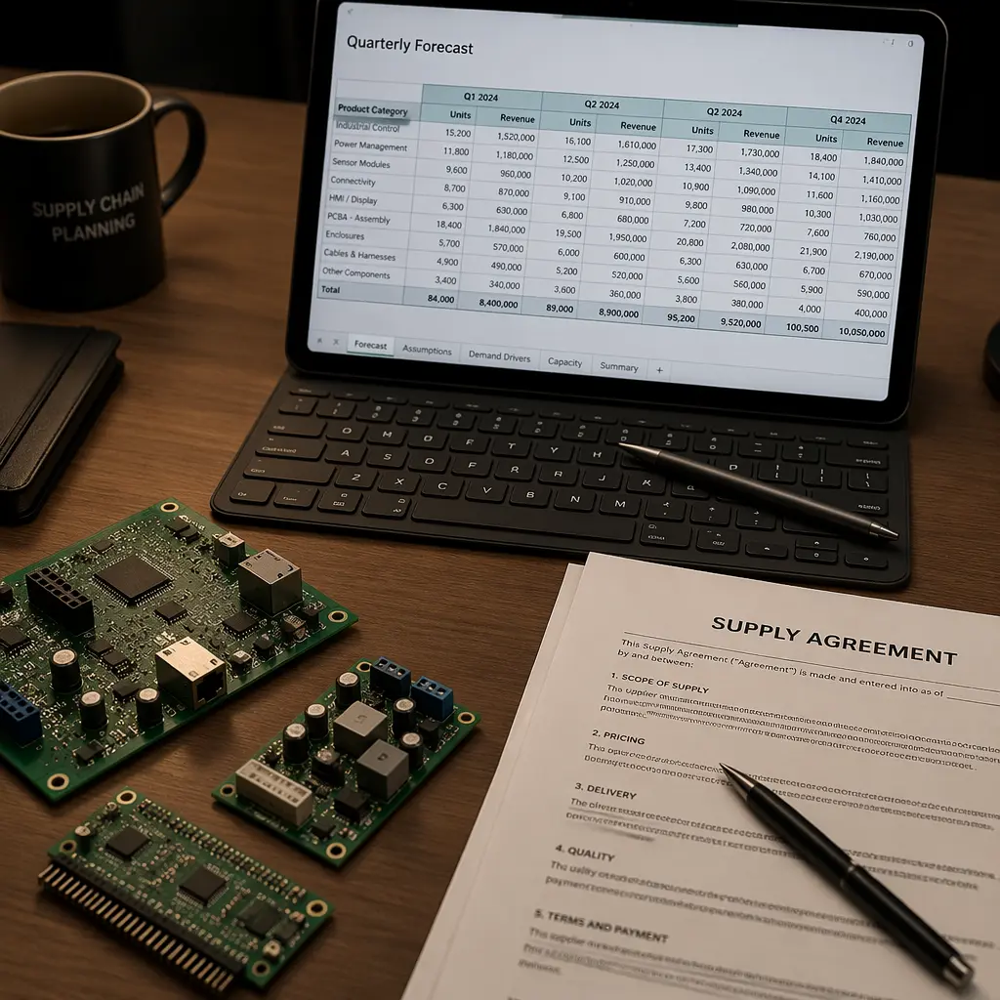

Every PCB procurement manager faces the same quarterly decision: commit to a blanket order for 12 months of volume, or buy spot as demand materializes. The blanket order promises lower unit cost and guaranteed capacity. The spot buy offers flexibility and zero inventory carrying cost. Both strategies have vocal advocates. But the right answer depends on your production profile — and the math isn't always intuitive. This guide breaks down the cost models, risk factors, and decision framework that determines which strategy wins for your program.
Over the past three years, Huaxing PCBA has fulfilled both blanket orders (up to 250,000 units per quarter) and spot buys (as low as 50 units with 5-day turnaround) for customers across automotive, medical, and industrial sectors. The data reveals patterns that most procurement textbooks miss.
The Real Cost Difference — Beyond the Unit Price
Blanket orders typically deliver 12-18% lower unit cost than spot buys. This is well-known. What's less understood is that unit cost is only one component of total procurement cost. The full picture includes:
| Cost Component | Blanket Order | Spot Buy | Δ |
|---|---|---|---|
| Unit PCB price (8-layer, 100×120 mm, 5,000 pcs) | $4.85 | $5.70 | +17.5% |
| NRE / tooling amortization | $0.12/unit (over 50k) | $0.60/unit (over 5k) | +400% |
| Inventory carrying cost (20% annual) | $0.24/unit (avg 3 months) | $0 | N/A |
| Incoming QC cost per batch | $0.03/unit (1 batch/quarter) | $0.15/unit (per-order QC) | +400% |
| Expediting / premium freight | $0.02/unit (planned logistics) | $0.18/unit (frequent rush) | +800% |
| Engineering change cost risk | $0.50/unit (revision scrap) | $0.05/unit (small batches) | -90% |
| Total Landed Cost | $5.76 | $6.68 | +16% |
The landed cost gap narrows from 17.5% at unit level to 16% after accounting for all cost components — but blanket orders still win on pure cost. The catch: this model assumes zero engineering changes. If your design undergoes one revision during the 12-month blanket period, the scrap cost of obsolete inventory can wipe out the entire savings. Understanding NRE cost amortization is critical to building accurate total-cost models.
When Blanket Orders Win — 4 Conditions
Blanket purchase orders are the right strategy when four conditions are met simultaneously:
Design Stability — No Planned Revisions for ≥12 Months
If your PCB design has gone through 3+ production runs without a single Gerber change, it's likely stable. But if you're still on revision B and engineering has a revision C in the pipeline, a blanket order is a liability. The cost of scrapping 5,000 boards at revision B when revision C drops is $24,250 in raw material alone — far exceeding any unit-price savings. Our cost drivers guide covers the economics of revision management in detail.
Predictable Demand — Forecast Accuracy ≥80% for 6+ Months
Blanket orders require committing to volume bands. A typical structure: 12-month blanket for 50,000 units with quarterly releases of 12,500. If your demand forecast accuracy is below 80%, you're either over-committing (excess inventory) or under-committing (paying overage premiums). Medical device and automotive programs with firm production schedules are ideal blanket-order candidates; consumer electronics with volatile demand are not. Lead time reduction strategies can help bridge the flexibility gap.
Supplier Stability — Single-Source Risk is Acceptable
A 12-month blanket order typically ties you to one supplier. Before committing, verify: has this supplier delivered on-time for the last 6 consecutive orders? Is their financial position stable? Do they have experience with your technology level? If the answer to any of these is "no," maintain a dual-sourcing strategy and use spot buys until the supplier relationship matures.
Volume Sufficient to Justify Tooling Dedication
At volumes below 10,000 units per year, the tooling amortization benefit of a blanket order is negligible. The breakeven point for dedicated tooling (dedicated drill files, dedicated test fixtures) is approximately 8,000-12,000 units per year depending on layer count and test point density. Below that threshold, spot buying with shared-tooling setups is cost-competitive. Our quote comparison guide includes a tooling cost calculator.
Procurement Reality: The most expensive procurement mistake we see is blanket orders placed before design freeze. One industrial customer lost $41,000 in scrapped inventory when a component EOL forced a board respin at month 8 of a 12-month blanket. The unit-cost savings over spot buying would have been $32,000 — a net loss of $9,000. Design freeze first, blanket order second.
When Spot Buys Win — The Flexibility Premium
Spot buying — placing orders as needed, without long-term commitment — isn't just the "small company" option. It's strategically correct in several common scenarios:
New Product Introduction (NPI) and Ramp-Up Phase
During the first 6-12 months of production, design changes are frequent, demand is uncertain, and production processes are being tuned. Spot buys allow you to iterate without inventory liability. As the product moves from NPI to steady-state production, transition to blanket ordering. The NPI-to-blanket transition typically happens at 3-5 production runs when yield stabilizes above 95%.
Multi-Supplier Qualification Programs
If you're qualifying a second source or transitioning from an incumbent supplier, spot buys let you test supplier capability with low financial exposure. Place 3-5 spot orders of increasing complexity before committing to a blanket. Supplier transition is risky enough without adding volume commitment to the equation.
High-Mix, Low-Volume (HMLV) Production
If your product portfolio includes 20+ unique PCB designs with annual volumes below 1,000 units each, blanket orders per design are impractical. Instead, consolidate spot buys with a single supplier who can handle the mix — you gain relationship leverage without design-level commitment. Low-volume PCB assembly strategies can complement this approach.
Hybrid Strategy: The Best of Both Worlds
The most sophisticated PCB procurement programs don't choose between blanket and spot — they use both, applied to different parts of the portfolio:
| Program Profile | Recommended Strategy | Rationale |
|---|---|---|
| Stable design, >15k units/yr, single supplier qualified | Blanket order (12 months) | Maximize unit cost savings; risk is low |
| Stable design, >15k units/yr, qualifying second source | Blanket (70%) + Spot (30%) | Keep incumbent relationship while testing new supplier |
| Design in flux, >10k units/yr | Quarterly blanket with design-freeze clause | 3-month commitment windows reduce revision scrap risk |
| Stable design, 5-15k units/yr | Semi-annual blanket | 6-month windows balance savings with flexibility |
| Any design, <5k units/yr | Spot buy | Tooling amortization benefits are negligible at low volume |
| NPI / first production runs | Spot buy until run #5 | Design changes are near-certain in early production |

How to Structure a Blanket Order for PCB Procurement
If the analysis points toward a blanket order, the structure matters as much as the decision. Here's what a well-structured PCB blanket PO includes:
Tiered Pricing With Volume Bands — Not a Single Price
A good blanket order specifies unit pricing at 3-4 volume bands: e.g., $5.20 at 5,000-9,999 units, $4.85 at 10,000-19,999, $4.50 at 20,000+. This protects both parties — if your demand exceeds forecast, you capture additional savings; if it falls short, the supplier isn't locked into a loss-making price. Learn more about PCB price negotiation tactics.
Quarterly Release Mechanism — Not a Single Delivery
Never take delivery of a full year's volume at once. A standard blanket structure: commit to 12 months, release quarterly (or monthly) with 30-day lead time per release. This limits inventory carrying cost to 3 months of stock while preserving the blanket's pricing advantage. The supplier benefits from production planning visibility; you benefit from working capital efficiency.
Raw Material Price Adjustment Clause
Copper and laminate prices fluctuate. Over a 12-month period, a 15% copper price swing can shift PCB unit cost by 3-5%. A fair blanket order includes a quarterly material price review: if the LME copper price moves more than ±10% from the baseline, unit pricing adjusts by a pre-agreed formula. This prevents either party from getting caught on the wrong side of commodity swings.
Engineering Change Provision
Specify what happens when the Gerber files change: how much in-process inventory the supplier can charge for (typically WIP not exceeding 30 days of forecast), who pays for new tooling (minor changes absorbed; major redesigns renegotiated), and how quickly the new revision enters production (target: first article within 15 working days of revised Gerber release).
Negotiation Leverage: The single most valuable concession in a blanket order isn't unit price — it's capacity reservation. A supplier who commits to "15% of one SMT line dedicated to your program" has skin in the game beyond pricing. Ask for capacity commitment in the contract, not just pricing.
Decision Framework: Blanket or Spot?
Run your program through this 5-question filter. If you answer "yes" to all five, go blanket. If you answer "no" to two or more, stay spot:
Is the design frozen with no planned revisions for 12 months?
If engineering has a revision in the backlog, the answer is no. Wait until after that revision ships.
Is annual volume above 10,000 units?
Below this threshold, tooling amortization benefits are too small to justify the commitment.
Is demand forecast accuracy ≥80% for the next 6 months?
If your last 3 quarterly forecasts were off by more than 20%, you don't have the predictability a blanket order requires.
Has the supplier delivered on-time for ≥6 consecutive orders?
One late delivery in the last 6 orders is a warning. Two is a disqualifier for blanket commitment.
Can your organization absorb 3 months of inventory carrying cost?
If cash flow is tight, the working capital advantage of spot buying may outweigh unit-cost savings. Run the numbers with your finance team — a 17% unit cost saving means nothing if it strains your credit line.
Summary: Match Strategy to Product Maturity
The blanket-vs-spot decision isn't binary and it isn't permanent. The right strategy evolves with your product lifecycle: spot buying during NPI, transitioning to semi-annual blankets at production ramp, moving to 12-month blankets at steady-state, and potentially reverting to spot buys during end-of-life when volumes decline. The procurement teams that get this right aren't the ones with the lowest unit prices — they're the ones with the lowest total cost of ownership across the full production lifecycle.
At Huaxing PCBA, we support both models — from 50-unit spot buys with 5-day turnaround to 250,000-unit annual blankets with quarterly releases and dedicated production capacity. Our pricing structure is transparent across volume bands, and we'll help you model the total-cost comparison for your specific program. Read our dual-sourcing guide for supply chain resilience strategies, or contact us to discuss which procurement model fits your program.